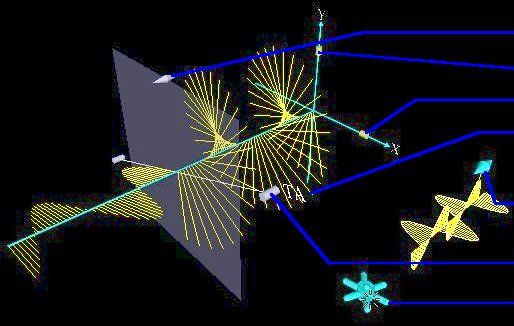
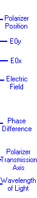

Polarization: Directions
Under normal operation, your WebTOP window should look like the following:
The WebTOP window has four parts. The top portion is the active WebTOP scene.
The second portion is the VRML Navigation controls.
The third portion, the console, contains a message line that provides help on the operation of the Widgets and keyboard entry boxes.
The fourth portion is the recording panel that allows you to record and replay WebTOP sessions. You may scroll down to read on, or
select the appropriate link from the following items:
How To Change
Parameters
During normal operation of the module, you should see a figure similar to this:

In this module you can change the properties of the incident light and you
can add polarizers and/or
waveplates . The parameters that you can change
are the position of the polarizer/wave-plate along the z axis, the
direction
of the polarizer/waveplate transmission axis (TA)/fast
axis, the wavelength
of the light, the magnitudes of the x and y components of the electric field
(E0x and E0y), the initial phase difference between Ex and Ey and the
thickness of the wave-plate (in units of wavelength). These parameters can
be changed by manipulating the widgets in the scene or by using the
Controls &
Parameters Panel to type in new values for them. Adding or removing polarizers/wave plates and changing the initial
polarization of the light (choosing between polarized or unpolarized
light) are also done by using the Controls at the WebTOP Console.
This module includes six types of widgets: a double-cone , a wheel, a
slider, a thickness, a bar, and phase difference.
The widgets are shown in the following Figures:
|
|
|
| Double-Cone Widget |
Wheel Widget |
Slider Widget |
 |
|
|
| Thickness Widget |
Bar Widget |
Phase Difference Widget |
To change a parameter, you need to position your cursor over the proper
widget. Labels on the module figure, shown above, identify the function of each of the
widgets. Once you have placed the cursor over the widget, the cursor changes shape.
If you click on the left mouse button, a message explaining the operation
of the widget appears at the help portion of the WebTOP console.
Note that the wave becomes static when the widget is engaged. The animation is restored after you release the widget. Note also that
while changing a parameter with a widget, the corresponding value is updated in the corresponding input box.
Changing a Parameter with the Double-Cone Widget:
This widget can be used to change the z-position of a polarizer or a
wave-plate. The widget is not visible until you position your cursor over the
polarizer/wave-plate. Once you select the widget, drag the cursor in the
direction that will produce the desired change along the wave path. You will
notice that while the change is occurring, the widget becomes highlighted and
the wave becomes static. Once you release the mouse button, a wave pattern
reflecting the new value of the position is observed.
Changing a Parameter with the Wheel Widget:
Once you select the wheel, drag and rotate the cursor to the left if you want to
decrease the wavelength or the right if you want to increase it. Note that the
color of the wave is not representative of the wavelength of the light used. You may need to repeat dragging in the same
direction until you obtain the desired wavelength.
Changing a Parameter with the Slider Widget:
The slider can be used to change E0x or E0y. Select the desired
slider and move it along the axis until you obtain the desired value.
Changing a Parameter with the Thickness Widget:
The thickness widget is available only for waveplates. You select it
by positioning your cursor over one of the two square boxes. The changes occur
when you move the cursor along the z-axis in the direction of the desired
change.
Changing a Parameter with the Bar Widget:
You select the bar widget by positioning the cursor over the
cylinders at either end of the bar. Moving the bar allows you to rotate the
polarizer/wave-plate relative to the z-axis.
Changing a Parameter with the Phase-Difference Widget:
This widget allows you to change the phase difference between the two
electric field components of the incident wave. Select the double-cone on the phase difference widget and move it
either forward or backward along the direction of the wave path.
Changing Parameter With the Controls & Parameters Panel:
The Controls and Parameters Panel provides two interfaces: one for
polarized light and one for unpolarized light. You may switch between them by clicking on the appropriate Tab. In either interface, you may change the parameters by typing the values in the "Input
Boxes" then pressing the "Enter" key. A selection
box allows you to select whether you would like to add a polarizer or a
wave-plate. Press the Add button to add the
selected device. Note that the device is added at the arbitrary value, z=2.
You can move it by using the double cone widget or typing the new value for z
in the input box. You may remove a device by selecting it then pressing the Remove
button. The button right of the Add button (Composite/All/None/x
Only/y Only/x and y)
allows you to select the component of the wave you want to visualize. For
instance, you can view the composite wave, the x and y components, the
composite along with the x and y components, the x component, the y-component,
and none of the wave. The History buttons allows
you to see the paths traveled by the tip of the electric field vector in the
planes z=0 and z=20. You may
hide all widgets and display them again by using the Hide
Widgets/Show Widgets button. The Stop/Play
button allows you stop and restart the simulation. It is
recommended that you press Stop the simulation before exiting or moving to
another page.
The following figures show different setting of the Controls &
Parameters Panel:
|
| Controls & Parameters Panel: Polarized light is
selected. The device that can be added under this configuration is a
Polarizer. You can add several polarizers. |
|
|
| Controls & Parameters Panel: Unpolarized light is
selected. The device that can be added under this configuration is a
Polarizer. You cannot add a waveplate when the incident light is
unpolarized. |
|
|
|
Controls & Parameters Panel: Polarized light is
selected. The device that can be added under this configuration is a
waveplate. |
|